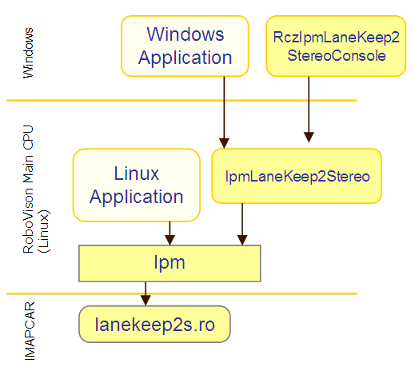
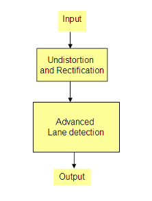
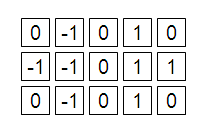
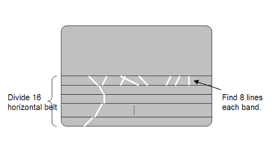
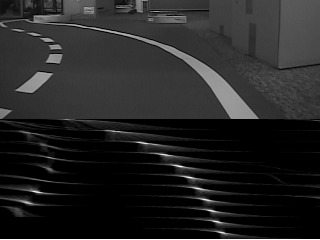
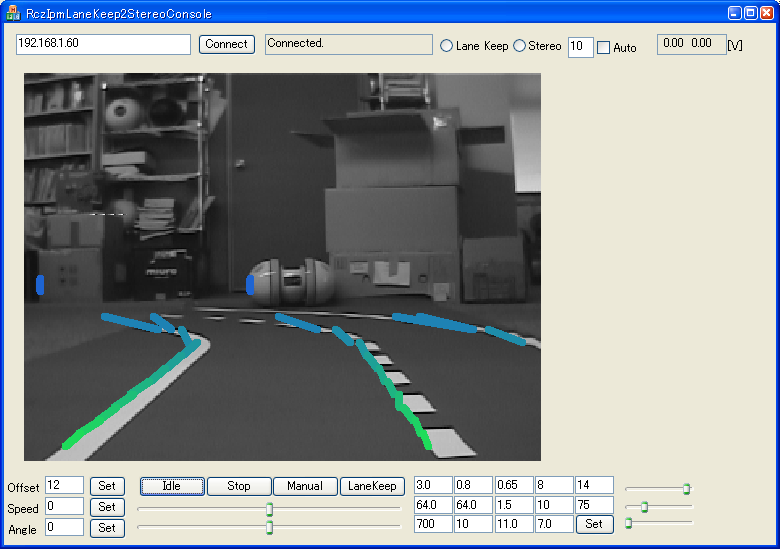

もう一つのプリセット画像認識機能である、 ハフ変換を利用した高度な白線検知アルゴリズムについてご紹介します。
ライブラリIpmを通じて利用できます。 また、IpmLaneKeep2Stereoは、これを利用して白線追従を行う Linuxアプリケーションです(RoboCarをご利用の方は走行もできます)。 WindowsPC上の、RczIpmLaneKeep2StereoConsoleで画像を表示し、 各種パラメータを設定することができます。

RcImageはライブラリとして利用していません。 IpmLaneKeep2Stereoアプリケーションでは、Ipmを直接利用してMyIpmManagerクラスを 実装しています。 ユーザ独自の画像アルゴリズムをIMAPCARへ実装した場合に 同様の構成となります。独自アルゴリズム実装のサンプルとしても ご利用ください。
IMAPCAR内で実装されている処理のフローダイアグラムです。

図: 画像処理フロー
レンズ歪み、光軸の補正、を行い、左右のカメラの歪みのない画像を 出力します。また、 両カメラ間の位置、姿勢補正を行い、方向位置を合わせた、 真にx方向のみオフセットされた位置関係のステレオ画像を生成します。
エッジ検出と、ハフ変換により直線成分を抽出し、 その位置と角度を計算します。
歪み補正には、前述のステレオ処理と同等の処理を行います。 利用するファイルも同様です。
画像認識に関する外部パラメータはありません。
画面の下半分のみを対象としています。
まず、画面下半分を水平方向に16分割します。
この領域を対象に、エッジ検出をします。

図: エッジ検出フィルタ
その後エッジ抽出された画像にたいし、一般Hough変換を用いて直線を抽出します。
各分割内で最もピークの高い8つの直線(全部で8×16個)を選んで返します。

図: レーン検知
検出された線情報には、位置と角度が含まれます。画面上での連結などをしらべると、 白線がどこにあるのかが判断できます。
typedef struct {
uchar flg;
uchar pos;
uint score;
uchar th;
uchar dummy[3];
} LaneResult;
LaneResult result[8*16];
検出した1つの線には、位置(X座標)と、角度が含まれます。 Y位置は、配列の順番で8個づつ画面上から並びますので、既知です。
内部のHough変換画像を表示したものが以下です。

図: 内部のHough画像
IpmLaneKeep2Stereoと、このRczIpmLaneKeep2StereoConsoleで、 レーンキープの走行ができます。

図: RczIpmLaneKeep2StereoConsoleメイン画面
LinuxアプリケーションIpmLaneKeep2Stereoを起動します。
cd /root/zmp/samples/IpmLaneKeep2Stereo
./lanekeep2stereo
RczIpmLaneKeep2StereoConsoleを起動して、IPアドレスを指定して、「Connect」ボタンをおします。
「Idle」ボタンを押してみます。画像の表示が開始されます。
画面上に表示されている、緑や青の線が検出した白線です。
「Speed」を指定して「Set」、「LaneKeep」ボタンを押すと、レーンキープ走行を開始します。